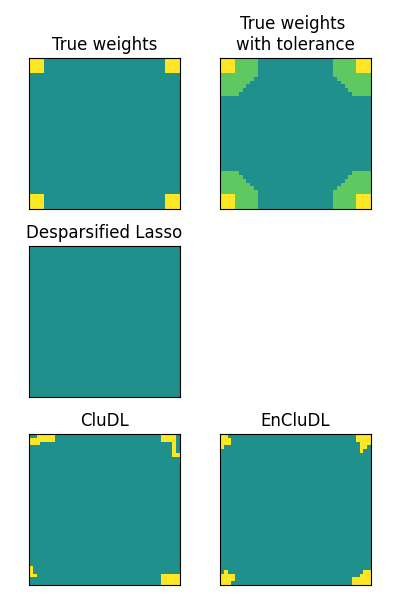

Note
Click here to download the full example code
Support recovery on structured data (2D)¶
Out:
/usr/local/lib/python3.8/site-packages/hidimstat/desparsified_lasso.py:32: VisibleDeprecationWarning: Creating an ndarray from ragged nested sequences (which is a list-or-tuple of lists-or-tuples-or ndarrays with different lengths or shapes) is deprecated. If you meant to do this, you must specify 'dtype=object' when creating the ndarray.
results = np.asarray(results)
Clustered inference: n_clusters = 200, inference method = desparsified-lasso, seed = 0
/usr/local/lib/python3.8/site-packages/hidimstat/desparsified_lasso.py:32: VisibleDeprecationWarning: Creating an ndarray from ragged nested sequences (which is a list-or-tuple of lists-or-tuples-or ndarrays with different lengths or shapes) is deprecated. If you meant to do this, you must specify 'dtype=object' when creating the ndarray.
results = np.asarray(results)
Clustered inference: n_clusters = 200, inference method = desparsified-lasso, seed = 0
/usr/local/lib/python3.8/site-packages/hidimstat/desparsified_lasso.py:32: VisibleDeprecationWarning: Creating an ndarray from ragged nested sequences (which is a list-or-tuple of lists-or-tuples-or ndarrays with different lengths or shapes) is deprecated. If you meant to do this, you must specify 'dtype=object' when creating the ndarray.
results = np.asarray(results)
Clustered inference: n_clusters = 200, inference method = desparsified-lasso, seed = 1
/usr/local/lib/python3.8/site-packages/hidimstat/desparsified_lasso.py:32: VisibleDeprecationWarning: Creating an ndarray from ragged nested sequences (which is a list-or-tuple of lists-or-tuples-or ndarrays with different lengths or shapes) is deprecated. If you meant to do this, you must specify 'dtype=object' when creating the ndarray.
results = np.asarray(results)
Clustered inference: n_clusters = 200, inference method = desparsified-lasso, seed = 2
/usr/local/lib/python3.8/site-packages/hidimstat/desparsified_lasso.py:32: VisibleDeprecationWarning: Creating an ndarray from ragged nested sequences (which is a list-or-tuple of lists-or-tuples-or ndarrays with different lengths or shapes) is deprecated. If you meant to do this, you must specify 'dtype=object' when creating the ndarray.
results = np.asarray(results)
Clustered inference: n_clusters = 200, inference method = desparsified-lasso, seed = 3
/usr/local/lib/python3.8/site-packages/hidimstat/desparsified_lasso.py:32: VisibleDeprecationWarning: Creating an ndarray from ragged nested sequences (which is a list-or-tuple of lists-or-tuples-or ndarrays with different lengths or shapes) is deprecated. If you meant to do this, you must specify 'dtype=object' when creating the ndarray.
results = np.asarray(results)
Clustered inference: n_clusters = 200, inference method = desparsified-lasso, seed = 4
/usr/local/lib/python3.8/site-packages/hidimstat/desparsified_lasso.py:32: VisibleDeprecationWarning: Creating an ndarray from ragged nested sequences (which is a list-or-tuple of lists-or-tuples-or ndarrays with different lengths or shapes) is deprecated. If you meant to do this, you must specify 'dtype=object' when creating the ndarray.
results = np.asarray(results)
Clustered inference: n_clusters = 200, inference method = desparsified-lasso, seed = 5
/usr/local/lib/python3.8/site-packages/hidimstat/desparsified_lasso.py:32: VisibleDeprecationWarning: Creating an ndarray from ragged nested sequences (which is a list-or-tuple of lists-or-tuples-or ndarrays with different lengths or shapes) is deprecated. If you meant to do this, you must specify 'dtype=object' when creating the ndarray.
results = np.asarray(results)
Clustered inference: n_clusters = 200, inference method = desparsified-lasso, seed = 6
/usr/local/lib/python3.8/site-packages/hidimstat/desparsified_lasso.py:32: VisibleDeprecationWarning: Creating an ndarray from ragged nested sequences (which is a list-or-tuple of lists-or-tuples-or ndarrays with different lengths or shapes) is deprecated. If you meant to do this, you must specify 'dtype=object' when creating the ndarray.
results = np.asarray(results)
Clustered inference: n_clusters = 200, inference method = desparsified-lasso, seed = 7
/usr/local/lib/python3.8/site-packages/hidimstat/desparsified_lasso.py:32: VisibleDeprecationWarning: Creating an ndarray from ragged nested sequences (which is a list-or-tuple of lists-or-tuples-or ndarrays with different lengths or shapes) is deprecated. If you meant to do this, you must specify 'dtype=object' when creating the ndarray.
results = np.asarray(results)
Clustered inference: n_clusters = 200, inference method = desparsified-lasso, seed = 8
/usr/local/lib/python3.8/site-packages/hidimstat/desparsified_lasso.py:32: VisibleDeprecationWarning: Creating an ndarray from ragged nested sequences (which is a list-or-tuple of lists-or-tuples-or ndarrays with different lengths or shapes) is deprecated. If you meant to do this, you must specify 'dtype=object' when creating the ndarray.
results = np.asarray(results)
Clustered inference: n_clusters = 200, inference method = desparsified-lasso, seed = 9
/usr/local/lib/python3.8/site-packages/hidimstat/desparsified_lasso.py:32: VisibleDeprecationWarning: Creating an ndarray from ragged nested sequences (which is a list-or-tuple of lists-or-tuples-or ndarrays with different lengths or shapes) is deprecated. If you meant to do this, you must specify 'dtype=object' when creating the ndarray.
results = np.asarray(results)
Clustered inference: n_clusters = 200, inference method = desparsified-lasso, seed = 10
/usr/local/lib/python3.8/site-packages/hidimstat/desparsified_lasso.py:32: VisibleDeprecationWarning: Creating an ndarray from ragged nested sequences (which is a list-or-tuple of lists-or-tuples-or ndarrays with different lengths or shapes) is deprecated. If you meant to do this, you must specify 'dtype=object' when creating the ndarray.
results = np.asarray(results)
Clustered inference: n_clusters = 200, inference method = desparsified-lasso, seed = 11
/usr/local/lib/python3.8/site-packages/hidimstat/desparsified_lasso.py:32: VisibleDeprecationWarning: Creating an ndarray from ragged nested sequences (which is a list-or-tuple of lists-or-tuples-or ndarrays with different lengths or shapes) is deprecated. If you meant to do this, you must specify 'dtype=object' when creating the ndarray.
results = np.asarray(results)
Clustered inference: n_clusters = 200, inference method = desparsified-lasso, seed = 12
/usr/local/lib/python3.8/site-packages/hidimstat/desparsified_lasso.py:32: VisibleDeprecationWarning: Creating an ndarray from ragged nested sequences (which is a list-or-tuple of lists-or-tuples-or ndarrays with different lengths or shapes) is deprecated. If you meant to do this, you must specify 'dtype=object' when creating the ndarray.
results = np.asarray(results)
Clustered inference: n_clusters = 200, inference method = desparsified-lasso, seed = 13
/usr/local/lib/python3.8/site-packages/hidimstat/desparsified_lasso.py:32: VisibleDeprecationWarning: Creating an ndarray from ragged nested sequences (which is a list-or-tuple of lists-or-tuples-or ndarrays with different lengths or shapes) is deprecated. If you meant to do this, you must specify 'dtype=object' when creating the ndarray.
results = np.asarray(results)
Clustered inference: n_clusters = 200, inference method = desparsified-lasso, seed = 14
/usr/local/lib/python3.8/site-packages/hidimstat/desparsified_lasso.py:32: VisibleDeprecationWarning: Creating an ndarray from ragged nested sequences (which is a list-or-tuple of lists-or-tuples-or ndarrays with different lengths or shapes) is deprecated. If you meant to do this, you must specify 'dtype=object' when creating the ndarray.
results = np.asarray(results)
Clustered inference: n_clusters = 200, inference method = desparsified-lasso, seed = 15
/usr/local/lib/python3.8/site-packages/hidimstat/desparsified_lasso.py:32: VisibleDeprecationWarning: Creating an ndarray from ragged nested sequences (which is a list-or-tuple of lists-or-tuples-or ndarrays with different lengths or shapes) is deprecated. If you meant to do this, you must specify 'dtype=object' when creating the ndarray.
results = np.asarray(results)
Clustered inference: n_clusters = 200, inference method = desparsified-lasso, seed = 16
/usr/local/lib/python3.8/site-packages/hidimstat/desparsified_lasso.py:32: VisibleDeprecationWarning: Creating an ndarray from ragged nested sequences (which is a list-or-tuple of lists-or-tuples-or ndarrays with different lengths or shapes) is deprecated. If you meant to do this, you must specify 'dtype=object' when creating the ndarray.
results = np.asarray(results)
Clustered inference: n_clusters = 200, inference method = desparsified-lasso, seed = 17
/usr/local/lib/python3.8/site-packages/hidimstat/desparsified_lasso.py:32: VisibleDeprecationWarning: Creating an ndarray from ragged nested sequences (which is a list-or-tuple of lists-or-tuples-or ndarrays with different lengths or shapes) is deprecated. If you meant to do this, you must specify 'dtype=object' when creating the ndarray.
results = np.asarray(results)
Clustered inference: n_clusters = 200, inference method = desparsified-lasso, seed = 18
/usr/local/lib/python3.8/site-packages/hidimstat/desparsified_lasso.py:32: VisibleDeprecationWarning: Creating an ndarray from ragged nested sequences (which is a list-or-tuple of lists-or-tuples-or ndarrays with different lengths or shapes) is deprecated. If you meant to do this, you must specify 'dtype=object' when creating the ndarray.
results = np.asarray(results)
Clustered inference: n_clusters = 200, inference method = desparsified-lasso, seed = 19
/usr/local/lib/python3.8/site-packages/hidimstat/desparsified_lasso.py:32: VisibleDeprecationWarning: Creating an ndarray from ragged nested sequences (which is a list-or-tuple of lists-or-tuples-or ndarrays with different lengths or shapes) is deprecated. If you meant to do this, you must specify 'dtype=object' when creating the ndarray.
results = np.asarray(results)
Clustered inference: n_clusters = 200, inference method = desparsified-lasso, seed = 20
/usr/local/lib/python3.8/site-packages/hidimstat/desparsified_lasso.py:32: VisibleDeprecationWarning: Creating an ndarray from ragged nested sequences (which is a list-or-tuple of lists-or-tuples-or ndarrays with different lengths or shapes) is deprecated. If you meant to do this, you must specify 'dtype=object' when creating the ndarray.
results = np.asarray(results)
Clustered inference: n_clusters = 200, inference method = desparsified-lasso, seed = 21
/usr/local/lib/python3.8/site-packages/hidimstat/desparsified_lasso.py:32: VisibleDeprecationWarning: Creating an ndarray from ragged nested sequences (which is a list-or-tuple of lists-or-tuples-or ndarrays with different lengths or shapes) is deprecated. If you meant to do this, you must specify 'dtype=object' when creating the ndarray.
results = np.asarray(results)
Clustered inference: n_clusters = 200, inference method = desparsified-lasso, seed = 22
/usr/local/lib/python3.8/site-packages/hidimstat/desparsified_lasso.py:32: VisibleDeprecationWarning: Creating an ndarray from ragged nested sequences (which is a list-or-tuple of lists-or-tuples-or ndarrays with different lengths or shapes) is deprecated. If you meant to do this, you must specify 'dtype=object' when creating the ndarray.
results = np.asarray(results)
Clustered inference: n_clusters = 200, inference method = desparsified-lasso, seed = 23
/usr/local/lib/python3.8/site-packages/hidimstat/desparsified_lasso.py:32: VisibleDeprecationWarning: Creating an ndarray from ragged nested sequences (which is a list-or-tuple of lists-or-tuples-or ndarrays with different lengths or shapes) is deprecated. If you meant to do this, you must specify 'dtype=object' when creating the ndarray.
results = np.asarray(results)
Clustered inference: n_clusters = 200, inference method = desparsified-lasso, seed = 24
/usr/local/lib/python3.8/site-packages/hidimstat/desparsified_lasso.py:32: VisibleDeprecationWarning: Creating an ndarray from ragged nested sequences (which is a list-or-tuple of lists-or-tuples-or ndarrays with different lengths or shapes) is deprecated. If you meant to do this, you must specify 'dtype=object' when creating the ndarray.
results = np.asarray(results)
import numpy as np
import matplotlib.pyplot as plt
from sklearn.feature_extraction import image
from sklearn.cluster import FeatureAgglomeration
from hidimstat.scenario import multivariate_simulation
from hidimstat.stat_tools import zscore_from_pval, pval_from_cb
from hidimstat.desparsified_lasso import desparsified_lasso
from hidimstat.clustered_inference import clustered_inference
from hidimstat.ensemble_clustered_inference import ensemble_clustered_inference
from hidimstat.noise_std import empirical_snr
def weight_map_2D_extended(shape, roi_size, delta):
roi_size_extended = roi_size + delta
w = np.zeros(shape + (5,))
w[0:roi_size, 0:roi_size, 0] = 0.5
w[-roi_size:, -roi_size:, 1] = 0.5
w[0:roi_size, -roi_size:, 2] = 0.5
w[-roi_size:, 0:roi_size, 3] = 0.5
w[0:roi_size_extended, 0:roi_size_extended, 0] += 0.5
w[-roi_size_extended:, -roi_size_extended:, 1] += 0.5
w[0:roi_size_extended, -roi_size_extended:, 2] += 0.5
w[-roi_size_extended:, 0:roi_size_extended, 3] += 0.5
for i in range(roi_size_extended):
for j in range(roi_size_extended):
if (i - roi_size) + (j - roi_size) >= delta:
w[i, j, 0] = 0
w[-i-1, -j-1, 1] = 0
w[i, -j-1, 2] = 0
w[-i-1, j, 3] = 0
beta_extended = w.sum(-1).ravel()
return beta_extended
def add_one_subplot(ax, map, title):
if map is not None:
im = ax.imshow(map)
im.set_clim(-1, 1)
ax.tick_params(
axis='both',
which='both',
bottom=False,
top=False,
left=False,
labelbottom=False,
labelleft=False)
ax.set_title(title)
else:
ax.axis('off')
ax.get_xaxis().set_visible(False)
ax.get_yaxis().set_visible(False)
def plot(maps, titles, save_fig=False):
fig, axes = plt.subplots(3, 2, figsize=(4, 6))
for i in range(3):
for j in range(2):
k = i * 2 + j
add_one_subplot(axes[i][j], maps[k], titles[k])
fig.tight_layout()
if save_fig:
figname = 'figures/simu_2D.png'
plt.savefig(figname)
print(f'Save figure to {figname}')
plt.show()
def main():
# simulation parameters
n_samples = 100
shape = (40, 40)
n_features = shape[1] * shape[0]
roi_size = 4
sigma = 2.0
smooth_X = 1.0
# hyper-parameters
n_clusters = 200
# inference parameters
fwer_target = 0.1
delta = 6
# delta = 6 is the tolerance parameter corresponding to
# n_clusters = 200 for this particular scenario.
# To compute it, one must compute the largest cluster diameter.
# computation parameter
n_jobs = 1
# computing the thresholds for feature selection
correction_no_cluster = 1. / n_features
correction_cluster = 1. / n_clusters
thr_c = zscore_from_pval((fwer_target / 2) * correction_cluster)
thr_nc = zscore_from_pval((fwer_target / 2) * correction_no_cluster)
X_init, y, beta, epsilon, _, _ = \
multivariate_simulation(n_samples, shape, roi_size, sigma, smooth_X,
seed=1)
empirical_snr(X_init, y, beta, epsilon)
beta_extended = weight_map_2D_extended(shape, roi_size, delta)
# desparsified lasso
beta_hat, cb_min, cb_max = desparsified_lasso(X_init, y, n_jobs=n_jobs)
pval, pval_corr, one_minus_pval, one_minus_pval_corr = \
pval_from_cb(cb_min, cb_max)
zscore = zscore_from_pval(pval, one_minus_pval)
selected_dl = zscore > thr_nc
selected_dl = np.logical_or(pval_corr < fwer_target / 2,
one_minus_pval_corr < fwer_target / 2)
# clustered desparsified lasso (CluDL)
connectivity = image.grid_to_graph(n_x=shape[0],
n_y=shape[1])
ward = FeatureAgglomeration(n_clusters=n_clusters,
connectivity=connectivity,
linkage='ward')
beta_hat, pval, pval_corr, one_minus_pval, one_minus_pval_corr = \
clustered_inference(X_init, y, ward, n_clusters)
zscore = zscore_from_pval(pval, one_minus_pval)
selected_cdl = zscore > thr_c
selected_cdl = np.logical_or(pval_corr < fwer_target / 2,
one_minus_pval_corr < fwer_target / 2)
# ensemble of clustered desparsified lasso (EnCluDL)
beta_hat, pval, pval_corr, one_minus_pval, one_minus_pval_corr = \
ensemble_clustered_inference(X_init, y, ward,
n_clusters, train_size=0.3)
zscore = zscore_from_pval(pval, one_minus_pval)
selected_ecdl = zscore > thr_c
selected_ecdl = np.logical_or(pval_corr < fwer_target / 2,
one_minus_pval_corr < fwer_target / 2)
maps = []
titles = []
maps.append(np.reshape(beta, shape))
titles.append('True weights')
maps.append(np.reshape(beta_extended, shape))
titles.append('True weights \nwith tolerance')
maps.append(np.reshape(selected_dl, shape))
titles.append('Desparsified Lasso')
maps.append(None)
titles.append(None)
maps.append(np.reshape(selected_cdl, shape))
titles.append('CluDL')
maps.append(np.reshape(selected_ecdl, shape))
titles.append('EnCluDL')
plot(maps, titles)
if __name__ == '__main__':
main()
Total running time of the script: ( 1 minutes 30.737 seconds)